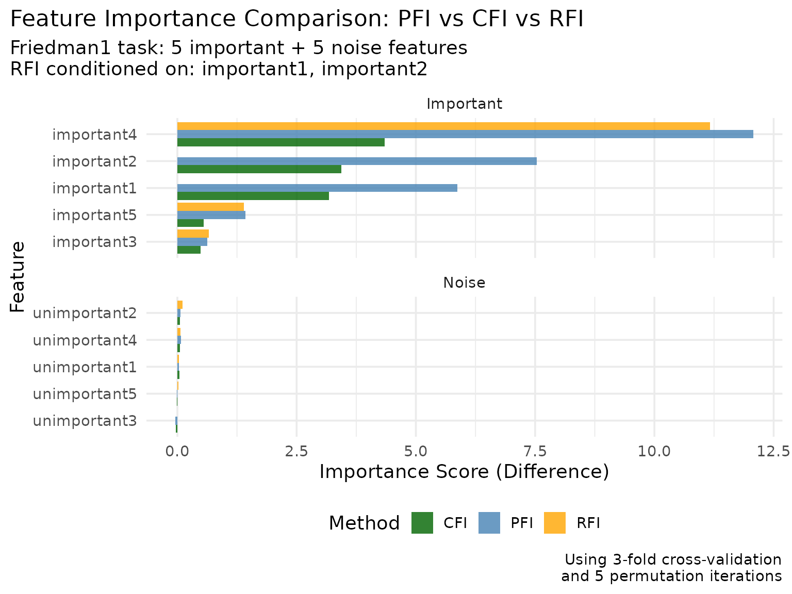
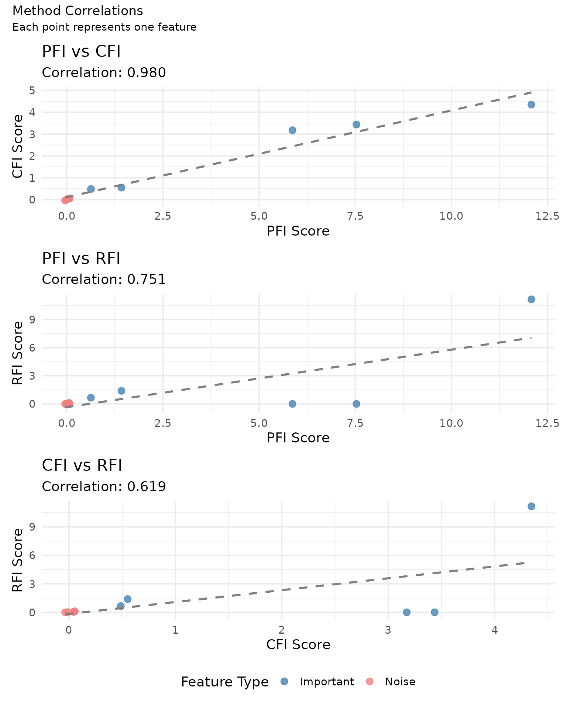
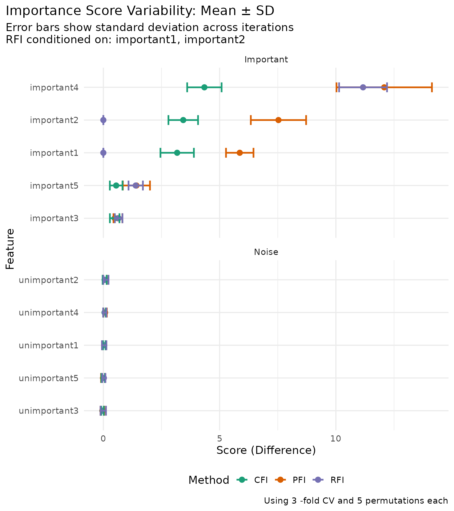

Perturbation-based Feature Importance Methods
Source:vignettes/perturbation-importance.Rmd
perturbation-importance.RmdThis vignette demonstrates the three perturbation-based feature importance methods implemented in xplainfi:
- PFI (Permutation Feature Importance): Uses marginal sampling (simple permutation)
- CFI (Conditional Feature Importance): Uses conditional sampling via Adversarial Random Forests
- RFI (Relative Feature Importance): Uses conditional sampling on a user-specified subset of features
Problem Setup: Friedman1 Task
We’ll use the Friedman1 task generator which provides an ideal setup for demonstrating feature importance methods. This synthetic regression task has a known ground truth:
-
5 important features (
important1toimportant5) that actually affect the target -
5 unimportant features (
unimportant1tounimportant5) that are pure noise
The target function is: \(y = 10 * \operatorname{sin}(\pi * x_1 * x_2) + 20 * (x_3 - 0.5)^2 + 10 * x_4 + 5 * x_5 + \epsilon\)
This makes it easy to evaluate whether our importance methods correctly identify the truly important features.
# Generate the task
task <- tgen("friedman1")$generate(n = 400)
learner <- lrn("regr.ranger", num.trees = 100)
resampling <- rsmp("cv", folds = 3)
measure <- msr("regr.mse")The task has 400 observations with 10 features: important1, important2, important3, important4, important5, unimportant1, unimportant2, unimportant3, unimportant4, unimportant5. The target variable is y.
Permutation Feature Importance (PFI)
PFI shuffles each feature independently, breaking the association between the feature and the target while preserving the marginal distribution.
For more stable results, we use:
- 3-fold CV for more reliable performance estimates
- Within each resampling iteration, we repeat the
permutation-prediction-scoring step
iters_permtimes
pfi <- PFI$new(
task = task,
learner = learner,
measure = measure,
resampling = resampling,
iters_perm = 5
)
# Compute importance scores
pfi_results <- pfi$compute(relation = "difference")
pfi_results
#> Key: <feature>
#> feature importance sd
#> <char> <num> <num>
#> 1: important1 5.86554439 0.59082615
#> 2: important2 7.53042540 1.18889134
#> 3: important3 0.62852245 0.19171506
#> 4: important4 12.07781769 2.05173137
#> 5: important5 1.42191247 0.58343346
#> 6: unimportant1 0.03241761 0.07411001
#> 7: unimportant2 0.06147252 0.08463275
#> 8: unimportant3 -0.04262232 0.07889375
#> 9: unimportant4 0.07622793 0.07243864
#> 10: unimportant5 -0.01541102 0.08219456
# Also stored in
pfi$importance
#> Key: <feature>
#> feature importance sd
#> <char> <num> <num>
#> 1: important1 5.86554439 0.59082615
#> 2: important2 7.53042540 1.18889134
#> 3: important3 0.62852245 0.19171506
#> 4: important4 12.07781769 2.05173137
#> 5: important5 1.42191247 0.58343346
#> 6: unimportant1 0.03241761 0.07411001
#> 7: unimportant2 0.06147252 0.08463275
#> 8: unimportant3 -0.04262232 0.07889375
#> 9: unimportant4 0.07622793 0.07243864
#> 10: unimportant5 -0.01541102 0.08219456
# Show a sample of detailed scores
head(pfi$scores, 10) |>
knitr::kable(digits = 4, caption = "Sample of PFI detailed scores")| feature | iter_rsmp | iter_perm | regr.mse_orig | regr.mse_perm | importance |
|---|---|---|---|---|---|
| important1 | 1 | 1 | 7.2702 | 12.8889 | 5.6187 |
| important1 | 1 | 2 | 7.2702 | 12.9852 | 5.7150 |
| important1 | 1 | 3 | 7.2702 | 12.8721 | 5.6019 |
| important1 | 1 | 4 | 7.2702 | 13.3088 | 6.0386 |
| important1 | 1 | 5 | 7.2702 | 13.8732 | 6.6030 |
| important1 | 2 | 1 | 6.5886 | 12.4538 | 5.8652 |
| important1 | 2 | 2 | 6.5886 | 12.5989 | 6.0103 |
| important1 | 2 | 3 | 6.5886 | 13.0967 | 6.5081 |
| important1 | 2 | 4 | 6.5886 | 12.4237 | 5.8351 |
| important1 | 2 | 5 | 6.5886 | 12.5381 | 5.9495 |
Conditional Feature Importance (CFI)
CFI uses conditional sampling to preserve the joint distribution of all other features when perturbing a feature of interest. By default we use Adversarial Random Forests (ARF) as conditional sampler internally.
sampler = ARFSampler$new(
task = task,
arf_args = list(verbose = FALSE),
forde_args = list()
)
# Example sampling for 5 randomly chosen rows from the task
sample_data <- task$data(rows = sample(task$nrow, size = 5))
sampled_result <- sampler$sample(
feature = "important1",
data = sample_data,
conditioning_features = "important2"
)Original important1 values: 0.246, 0.786, 0.492, 0.668,
0.521
Sampled important1 values (conditioned on
important2): -0.152, 0.829, 0.16, 0.756, 0.74
cfi <- CFI$new(
task = task,
learner = learner,
measure = measure,
resampling = resampling,
iters_perm = 5,
sampler = sampler
)
# Compute importance scores
cfi_results <- cfi$compute(relation = "difference")
cfi_results
#> Key: <feature>
#> feature importance sd
#> <char> <num> <num>
#> 1: important1 3.174003832 0.71919051
#> 2: important2 3.435560781 0.63674319
#> 3: important3 0.487036933 0.20581981
#> 4: important4 4.345208881 0.73990098
#> 5: important5 0.551741678 0.27226931
#> 6: unimportant1 0.040457097 0.05467298
#> 7: unimportant2 0.055751318 0.08539057
#> 8: unimportant3 -0.036216862 0.05459353
#> 9: unimportant4 0.051101874 0.05396739
#> 10: unimportant5 -0.008660248 0.07443565Relative Feature Importance (RFI)
RFI conditions on a specific subset of features, measuring importance relative to those features. Let’s condition on two of the important features to see how the others rank relative to this baseline.
conditioning_set <- c("important1", "important2")
rfi <- RFI$new(
task = task,
learner = learner,
measure = measure,
resampling = resampling,
conditioning_set = conditioning_set,
iters_perm = 5,
sampler = sampler
)
# Compute importance scores
rfi_results <- rfi$compute(relation = "difference")
rfi_results
#> Key: <feature>
#> feature importance sd
#> <char> <num> <num>
#> 1: important1 0.000000000 0.00000000
#> 2: important2 0.000000000 0.00000000
#> 3: important3 0.659032969 0.16358207
#> 4: important4 11.168278482 1.03079984
#> 5: important5 1.391927039 0.30919359
#> 6: unimportant1 0.035829586 0.09673696
#> 7: unimportant2 0.111951122 0.11040894
#> 8: unimportant3 -0.003414726 0.11705205
#> 9: unimportant4 0.063271393 0.07071163
#> 10: unimportant5 0.022609332 0.06713596Comparing Methods
Now let’s compare the results from all three methods:
# Combine results for comparison
comparison <- merge(
pfi_results[, .(feature, pfi = importance)],
cfi_results[, .(feature, cfi = importance)],
by = "feature"
)
comparison <- merge(
comparison,
rfi_results[, .(feature, rfi = importance)],
by = "feature"
)
# Add feature type for analysis
comparison[, feature_type := ifelse(grepl("^important", feature), "Important", "Noise")]
comparison |>
knitr::kable(
digits = 4,
caption = "Feature Importance Comparison (Difference Scores)",
col.names = c("Feature", "PFI", "CFI", "RFI", "Type")
)| Feature | PFI | CFI | RFI | Type |
|---|---|---|---|---|
| important1 | 5.8655 | 3.1740 | 0.0000 | Important |
| important2 | 7.5304 | 3.4356 | 0.0000 | Important |
| important3 | 0.6285 | 0.4870 | 0.6590 | Important |
| important4 | 12.0778 | 4.3452 | 11.1683 | Important |
| important5 | 1.4219 | 0.5517 | 1.3919 | Important |
| unimportant1 | 0.0324 | 0.0405 | 0.0358 | Noise |
| unimportant2 | 0.0615 | 0.0558 | 0.1120 | Noise |
| unimportant3 | -0.0426 | -0.0362 | -0.0034 | Noise |
| unimportant4 | 0.0762 | 0.0511 | 0.0633 | Noise |
| unimportant5 | -0.0154 | -0.0087 | 0.0226 | Noise |
Visualization
Let’s create comprehensive visualizations to understand the results:
# Reshape data for plotting
plot_data <- comparison |>
melt(
id.vars = c("feature", "feature_type"),
measure.vars = c("pfi", "cfi", "rfi"),
value.name = "importance",
variable.name = "method"
)
# Clean up method names
plot_data[, method := toupper(method)]
# Create the comparison plot
ggplot(plot_data, aes(x = importance, y = reorder(feature, importance), fill = method)) +
facet_wrap(~ feature_type, scales = "free_y", ncol = 1) +
geom_col(position = "dodge", alpha = 0.8) +
scale_fill_manual(values = c("PFI" = "steelblue", "CFI" = "darkgreen", "RFI" = "orange")) +
labs(
title = "Feature Importance Comparison: PFI vs CFI vs RFI",
subtitle = glue::glue("Friedman1 task: 5 important + 5 noise features
RFI conditioned on: {paste(conditioning_set, collapse = ', ')}"),
x = "Importance Score (Difference)",
y = "Feature",
fill = "Method",
caption = glue::glue("Using {resampling$iters}-fold cross-validation
and 5 permutation iterations")
) +
theme_minimal(base_size = 14) +
theme(
legend.position = "bottom",
plot.title.position = "plot"
)
Let’s also create a correlation plot to see how similar the methods are:
# Calculate correlations between methods
pfi_cfi_cor <- cor(comparison$pfi, comparison$cfi)
pfi_rfi_cor <- cor(comparison$pfi, comparison$rfi)
cfi_rfi_cor <- cor(comparison$cfi, comparison$rfi)
# Create correlation matrix plot
cor_data <- comparison[, .(feature, pfi, cfi, rfi, feature_type)]
# PFI vs CFI
p1 <- ggplot(cor_data, aes(x = pfi, y = cfi, color = feature_type)) +
geom_point(size = 3, alpha = 0.8) +
geom_smooth(method = "lm", se = FALSE, color = "gray50", linetype = "dashed") +
scale_color_manual(values = c("Important" = "steelblue", "Noise" = "lightcoral")) +
labs(
title = "PFI vs CFI",
subtitle = sprintf("Correlation: %.3f", pfi_cfi_cor),
x = "PFI Score", y = "CFI Score"
) +
theme_minimal(base_size = 14) +
theme(legend.position = "none")
# PFI vs RFI
p2 <- ggplot(cor_data, aes(x = pfi, y = rfi, color = feature_type)) +
geom_point(size = 3, alpha = 0.8) +
geom_smooth(method = "lm", se = FALSE, color = "gray50", linetype = "dashed") +
scale_color_manual(values = c("Important" = "steelblue", "Noise" = "lightcoral")) +
labs(
title = "PFI vs RFI",
subtitle = sprintf("Correlation: %.3f", pfi_rfi_cor),
x = "PFI Score", y = "RFI Score"
) +
theme_minimal(base_size = 14) +
theme(legend.position = "none")
# CFI vs RFI
p3 <- ggplot(cor_data, aes(x = cfi, y = rfi, color = feature_type)) +
geom_point(size = 3, alpha = 0.8) +
geom_smooth(method = "lm", se = FALSE, color = "gray50", linetype = "dashed") +
scale_color_manual(
values = c("Important" = "steelblue", "Noise" = "lightcoral"),
name = "Feature Type"
) +
labs(
title = "CFI vs RFI",
subtitle = sprintf("Correlation: %.3f", cfi_rfi_cor),
x = "CFI Score", y = "RFI Score"
) +
theme_minimal(base_size = 14)
# Combine plots
library(patchwork)
(p1 / p2 / p3) +
plot_annotation(
title = "Method Correlations",
subtitle = "Each point represents one feature"
) +
theme(legend.position = "bottom")
#> `geom_smooth()` using formula = 'y ~ x'
#> `geom_smooth()` using formula = 'y ~ x'
#> `geom_smooth()` using formula = 'y ~ x'
Understanding the Results
Let’s analyze how well each method distinguishes important from noise features:
# Calculate summary statistics by feature type
summary_stats <- comparison[, .(
mean_importance = mean(c(pfi, cfi, rfi)),
pfi_mean = mean(pfi),
cfi_mean = mean(cfi),
rfi_mean = mean(rfi),
n_features = .N
), by = feature_type]
summary_stats |> knitr::kable(digits = 4, caption = "Summary by feature type")| feature_type | mean_importance | pfi_mean | cfi_mean | rfi_mean | n_features |
|---|---|---|---|---|---|
| Important | 3.5158 | 5.5048 | 2.3987 | 2.6438 | 5 |
| Noise | 0.0297 | 0.0224 | 0.0205 | 0.0460 | 5 |
# Calculate separation ratios (how well each method separates signal from noise)
important_pfi <- comparison[feature_type == "Important", mean(pfi)]
noise_pfi <- comparison[feature_type == "Noise", mean(abs(pfi))]
pfi_separation <- important_pfi / noise_pfi
important_cfi <- comparison[feature_type == "Important", mean(cfi)]
noise_cfi <- comparison[feature_type == "Noise", mean(abs(cfi))]
cfi_separation <- important_cfi / noise_cfi
important_rfi <- comparison[feature_type == "Important", mean(rfi)]
noise_rfi <- comparison[feature_type == "Noise", mean(abs(rfi))]
rfi_separation <- important_rfi / noise_rfi
# Store results for inline reporting
pfi_sep <- round(pfi_separation, 2)
cfi_sep <- round(cfi_separation, 2)
rfi_sep <- round(rfi_separation, 2)
pfi_cfi <- round(pfi_cfi_cor, 3)
pfi_rfi <- round(pfi_rfi_cor, 3)
cfi_rfi <- round(cfi_rfi_cor, 3)Understanding the Differences
The three methods can yield different results because they make different assumptions:
PFI assumes features are independent and measures the marginal importance of each feature.
CFI preserves the conditional distribution \(P(X_{-j} | X_j)\) when perturbing feature \(j\), providing a more realistic assessment when features are correlated.
RFI measures importance relative to a specific conditioning set, answering “what additional information does this feature provide beyond what we already know from the conditioning features?”
In our Friedman1 example:
- All methods successfully identify that
important1throughimportant5are more important thanunimportant1throughunimportant5 - The relative rankings may differ because:
- PFI treats each feature in isolation
- CFI accounts for dependencies between all features
- RFI shows which features add value beyond
important1andimportant2
Variability Analysis
Let’s examine the stability of our importance estimates across
resampling- and permutation iterations using the $scores
tables:
detailed_scores <- rbindlist(list(
pfi$scores[, method := "PFI"],
cfi$scores[, method := "CFI"],
rfi$scores[, method := "RFI"]
))
score_summary <- detailed_scores[, .(
mean_importance = mean(importance),
sd_importance = sd(importance),
n_iterations = .N
), by = .(feature, method)]
# Add feature type
score_summary[, feature_type := ifelse(grepl("^important", feature), "Important", "Noise")]
# Plot error bars
ggplot(score_summary, aes(
y = reorder(feature, mean_importance),
x = mean_importance,
xmin = mean_importance - sd_importance,
xmax = mean_importance + sd_importance,
color = method)
) +
facet_wrap(vars(feature_type), ncol = 1, scales = "free_y") +
geom_point(size = 3) +
geom_errorbarh(linewidth = 1, height = 0.3) +
scale_color_brewer(palette = "Dark2") +
labs(
title = "Importance Score Variability: Mean ± SD",
subtitle = glue::glue("Error bars show standard deviation across iterations
RFI conditioned on: {paste(conditioning_set, collapse = ', ')}"),
x = "Score (Difference)",
y = "Feature",
color = "Method",
caption = paste("Using", resampling$iters, "-fold CV and", pfi$param_set$values$iters_perm, "permutations each")
) +
theme_minimal(base_size = 14) +
theme(
plot.title.position = "plot",
legend.position = "bottom"
)
Advanced Usage
Custom Samplers
You can provide custom samplers for more control:
# Create a custom ARF sampler with specific parameters
custom_sampler <- ARFSampler$new(
task = task,
arf_args = list(num.trees = 50), # Fewer trees for faster computation
forde_args = list(finite_bounds = "no") # Allow extrapolation
)
cfi_custom <- CFI$new(
task = task,
learner = learner,
measure = measure,
resampling = resampling,
sampler = custom_sampler
)Empty Conditioning Set for RFI
RFI with an empty conditioning set should produce similar results to PFI:
rfi_empty <- RFI$new(
task = task,
learner = learner,
measure = measure,
resampling = resampling,
conditioning_set = character(0), # Empty conditioning set
iters_perm = 5,
sampler = sampler
)
rfi_empty_results <- rfi_empty$compute()
# Compare with PFI
empty_comparison <- merge(
pfi_results[, .(feature, pfi = importance)],
rfi_empty_results[, .(feature, rfi_empty = importance)],
by = "feature"
)
correlation_empty <- cor(empty_comparison$pfi, empty_comparison$rfi_empty)The correlation between PFI and RFI with empty conditioning set is 0.997, confirming that \(\mathrm{RFI}(\emptyset) \approx \mathrm{PFI}\) as expected.
Key Takeaways
- All methods correctly identify important features in this well-structured synthetic task
- PFI provides a baseline for marginal feature importance
- CFI accounts for feature dependencies through conditional sampling
- RFI measures relative importance beyond a specified conditioning set
-
Method choice depends on your question:
- Use PFI for simple, interpretable marginal importance
- Use CFI when feature dependencies matter
- Use RFI to understand incremental value beyond known important features